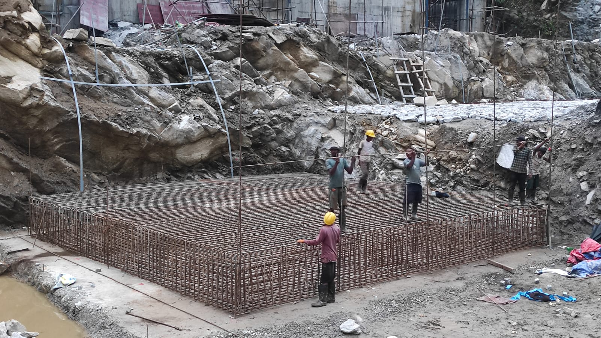

Zest Engineering Solutions Pvt. Ltd. is a multidisciplinary engineering consulting firm based in Kathmandu, registered with the Government of Nepal in 2079. We work across survey, design, optimisation, contract management and construction supervision for hydropower and civil projects throughout Nepal.
Our work covers civil, hydro-mechanical, electro-mechanical and transmission components, from desk study and detailed feasibility through detailed design and site supervision. We currently have nine projects in hand, ranging from a 940 kW run-of-river scheme to a 76.5 MW study.

Nepal's rivers carry an estimated 83,000 MW of technical hydropower potential, of which roughly 42,000 MW is considered economically viable. Installed capacity has grown quickly over the past decade and now stands near 4,000 MW, under a tenth of what is feasible. Several thousand megawatts are under construction or licensed across the Koshi, Gandaki, Karnali and Mahakali basins.
Most of that capacity is run-of-river, so output follows the hydrograph: strong through the monsoon, much reduced in the dry season. Closing that seasonal gap through peaking and storage schemes, and building the transmission to evacuate the power, is the work of the coming decade.
Building in this terrain is demanding. Schemes sit on steep, geologically young slopes in a seismically active belt, with long access routes and short working seasons. Headworks must survive monsoon floods and sediment loads. Powerhouses and anchor blocks must be checked for combined seismic and hydraulic loading. That is the environment our design and supervision work is built around.